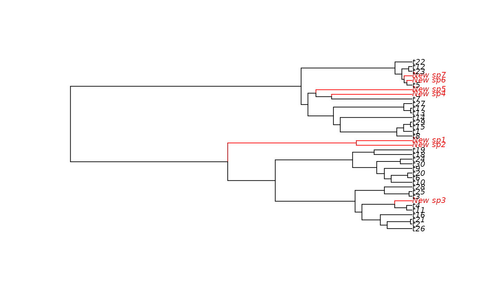

Import an external table of missing taxa as a missing_taxa_list object
Source: R/import_missing_taxa_list.R
import_missing_taxa_list.RdRead a table (e.g., a .csv file, or an Excel sheet) describing the taxa to graft, and convert it into a valid missing_taxa_list
object ready-to-be-used as input for phylograftR::graft_missing_taxa() or phylograftR::graft_missing_clades().
The table is converted by phylograftR::build_missing_taxa_list(), which also runs all the checks of validity
against the backbone phylogeny to ensure the missing_taxa_list provides information that are valid to process the grafting.
The same table can describe both types of taxa: taxa to graft within a target clade, and taxa to graft as missing clades sister to a clade.
Two lists are then returned, one for phylograftR::graft_missing_taxa() ($taxa) and one for phylograftR::graft_missing_clades() ($clades),
as done by phylograftR::build_missing_taxa_list_from_taxonomy() (see 'Taxa and missing clades in the same table' in Details).
Clades are defined by tips or node IDs, which allows for fine-tuning the constraints of each taxon (see 'Fine-tuning the clades' in Details).
For large phylogenies with neatly defined taxonomic levels, taxonomic tables are likely easier to prepare:
see phylograftR::build_missing_taxa_list_from_taxonomy() and phylograftR::import_taxonomic_table().
Usage
import_missing_taxa_list(
file,
phy,
sep = NULL,
sheet = 1,
reader = NULL,
verbose = TRUE,
...
)Arguments
- file
Character string. Path to the file with the table. The format is chosen from the extension of the file:
".csv"(comma-separated),".tsv",".tab"or".txt"(tab-separated),".xlsx"or".xls"(Excel, requires the packagereadxl). Useseporreaderfor other formats.The table must record one row per taxon to graft. Its columns are the items of
missing_taxa_listas inphylograftR::graft_missing_taxa()orphylograftR::graft_missing_clades(). See Details for a full description. All the columns are read as text. Blank cells andNAare missing values. A columnType("taxa"or"clades"), or both columnsTarget_cladeandSister_clade, allow for describing both types of taxa in the same table.- phy
An object of class
"phylo". The backbone phylogeny on which the taxa will be grafted. It is used to check the validity of the tips and clades provided.- sep
Character string. Field separator of a text file. Default is
NULL, to choose it from the extension of the file:","for.csv, and a tab for.tsv,.taband.txt. Commas and semicolons are also used inside the cells, to separate the tips and the subclades: to distinguish from the field separator, the cells containing tips and the subclades data must be quoted.- sheet
Character string or integer. Only used for Excel files. Name or position of the sheet to read. Default is
1.- reader
Function. Optional function used to read
file, to import any other format (e.g.,.ods, or an export of an online spreadsheet). It must take the path of the file as first argument and return a data frame. If provided, it is used whatever the extension of the file. Default isNULL.- verbose
Logical. Whether to print the conversions of node IDs into tips (if any). Default is
TRUE.- ...
Further arguments passed to the function reading the file (
utils::read.table()for text files,readxl::read_excel()for Excel files, orreader).
Value
A missing_taxa_list: a list, ready to be used in the grafting functions.
If the table describes both types of taxa, a list with two missing_taxa_list: $taxa (with $Target_clade, for phylograftR::graft_missing_taxa())
and $clades (with $Sister_clade, for phylograftR::graft_missing_clades()).
Each list comprises the following items:
$Taxon_nameCharacter vector.$Target_clade(or$Sister_clade) List of character vectors of tips.$Target_clade_name(or$Sister_clade_name) Only if the column was provided. Character vector of labels (NAif none). Not used for the grafting, but checked against the names oftotal_richness_per_clades, if provided (see the grafting functions).$include_target_clade_stemOnly if the column was provided. Logical vector (NAuses the global argument).$Excluded_subcladesOnly if the column was provided. List (one element per taxon) of lists of character vectors of tips.NULLfor taxa with no excluded subclades. The subclades are named after their labels ifExcluded_subclades_nameswas provided.$exclude_subclades_stemOnly if the column was provided. List (one element per taxon) of logical vectors (one value per excluded subclade), orNULL.$allowed_statesOnly if the column was provided. List (one element per taxon) of character vectors of states, orNULLfor taxa without a taxon-level value (the globalallowed_statesargument is used).
Every item is named after the taxa ($Taxon_name), in the same order.
Details
The columns of file are the items of missing_taxa_list as in phylograftR::graft_missing_taxa() or phylograftR::graft_missing_clades().
Column names must be written exactly as below. Tips are separated by commas (,), and the subclades by semicolons (;). Spaces around separators are ignored.
Values are TRUE or FALSE (also accepts T, F, yes, no, 1, 0), or NA.
Taxon_name(Required): Names of the taxa to graft. Names must be unique and absent fromphy$tip.label.Type: (Optional)"taxa"for taxa to graft within a target clade, or"clades"for taxa to graft as missing clades sister to a clade. Used to discriminate between both types of missing lineages in the same table (see 'Taxa and missing clades in the same table' below).Target_cladeand/orSister_clade(Required): Tip labels defining a target clade per taxon, i.e., the clade where the taxon is known to belong (e.g., its genus); or a sister clade, i.e., the clade on whose stem branch the taxon is grafted, as its sister. A pair of tips defines the clade as their MRCA node (e.g.,"t26, t18"). A single tip defines the "clade" as the terminal branch of this tip (e.g.,"t15"). A node ID ofphy(digits only, e.g.,"34") also defines the clade, see 'Node IDs' below. UseSister_cladeto prepare a list forphylograftR::graft_missing_clades(): the columns specific tophylograftR::graft_missing_taxa()below are then ignored, with a warning.include_target_clade_stem: (Optional) Logical values. For each taxon, whether the stem branch of its target clade is available for grafting.NAvalues and blank cells use the globalinclude_target_clade_stemargument ofphylograftR::graft_missing_taxa().Excluded_subclades: (Optional) For each taxon, tip labels defining the excluded subclades of its target clade where the taxon is known not to belong. Each subclade is defined by a pair of tips, a single tip, or a node ID. Ex:"t10, t19; 50; t7"for three subclades, the two first being clades with multiple species defined by a pair of tips ("t10, t19"), and an internal node ID ("50"). The last one is a single tip define by its tip label ("t7"). Use blank cells for taxa without excluded subclades.exclude_subclades_stem: (Optional) Logical values. For each taxon, whether the stem of each of its excluded subclades is also excluded, with one value per subclade ofExcluded_subcladesseparated by semicolons, or a single value used for all of them. Ex:"FALSE; TRUE; TRUE".NAvalues and blank cells use the globalexclude_subclades_stemargument ofphylograftR::graft_missing_taxa().allowed_states: (Optional) For each taxon, the states of asimmapin which it can be grafted (see thesimmapargument ofphylograftR::graft_missing_taxa()orphylograftR::graft_missing_clades()), separated by commas. It is accepted with bothTarget_cladeandSister_clade. Ex:"blue, green". Blank cells andNAhave no taxon-level value, so the globalallowed_statesargument of the grafting function is used for the taxon. States are matched exactly with the states of thesimmap(e.g., case matters) when grafting, and so cannot contain commas. If thesimmapargument is a list of the maps of several traits, give the states of each trait separated by semicolons, in the order of the traits (e.g.,"A1, A2; ; C3"for three traits: no states for the second trait, so the globalallowed_statesof the trait, or all its states, are used), or name the traits (e.g.,"color = A1, A2 ; elevation = C3"). The names of the states are not checked here as thesimmapis not provided: the grafting function checks them.
Optional columns that do not match items in missing_taxa_list can be used to provide names of clades:
Target_clade_nameorSister_clade_name(Optional): Label of the target (or sister) clade. It is only used to check that the clades are defined consistently (seephylograftR::build_missing_taxa_list()).Excluded_subclades_names(Optional): Labels of the excluded subclades, separated by semicolons, in the same order as inExcluded_subclades. Ex:"group_1; group_2; tip_t7". There must be one label per subclade. If provided, they are used as names of the subclades in theExcluded_subcladesitem of the list, and in the messages of the grafting functions.
Other columns are ignored, with a warning.
Taxa and missing clades in the same table
A table can describe both types of taxa, so a single call prepares the lists for phylograftR::graft_missing_taxa()
and phylograftR::graft_missing_clades(), on the same backbone and with the same clades written with the same tips.
The type of each taxon is given by:
The column
Type, with"taxa"(target clade) or"clades"(sister clade): the clade is then read fromTarget_cladeorSister_clade, respectively.Otherwise, without
Type, by the clade column that is filled in its row, when the table has bothTarget_cladeandSister_cladecolumns. Each row must fill exactly one of them (the function stops if both or none are filled).
The function returns:
A single
missing_taxa_listif all the taxa have the same type, whetherTypeis provided or not.A list of two
missing_taxa_list, named$taxaand$clades, if both types are present. Each one is a standardmissing_taxa_list, and the taxa of both lists are named differently (names must be unique across the table). Use$taxainphylograftR::graft_missing_taxa()and$cladesinphylograftR::graft_missing_clades().
Clade labels are also checked across both lists (the same clade has the same label as a target clade and as a sister clade),
so that they can be matched with the names of total_richness_per_clades.
Recommended use: provide the whole list ($taxa and $clades) to phylograftR::graft_missing_taxa_and_clades(),
which grafts the missing taxa first and then the missing clades, with a single set of inputs.
The two steps can also be chained by hand: graft the missing taxa with phylograftR::graft_missing_taxa(),
then use the grafted phylogeny as the backbone to graft the missing clades with phylograftR::graft_missing_clades().
The clades are defined by tips of the backbone, so they stay valid even when the grafted phylogeny is used for the second step.
Node IDs
Clades (Target_clade, Sister_clade, and each subclade of Excluded_subclades) are typically defined by (pairs of) tips.
However, the function also accepts clades defined by the ID of a node of phy instead of tips, in the same table, and even in the same cell
(e.g., "50; t5, t12; t7" for three excluded subclades defined respectively by an internal node, a pair of tips, a terminal tip label).
Node IDs are integers: 1 to N, with N being the number of tips (ape::Ntip(phy)), correspond to terminal nodes, and thus define single-tip clades.
Following IDs are the internal nodes, as shown by ape::nodelabels(), and correspond to clades with multiple descending species.
A value made only of digits is a node ID, so tip labels must include at least one other character than digits to be distinguished.
A clade is defined by tips or by one node ID, not both, and one node ID defines the clade alone.
Node IDs are converted into tips before any other check, as done by phylograftR::convert_nodes_to_tips(),
and the conversions are printed if verbose = TRUE.
The warnings and errors that follow, and the grafting functions, therefore use the tips that are traced back to your node IDs in the messages.
If a clade is already defined by tips in the table, a node ID of the same clade is converted into the same tips.
Convert total_richness_per_clades (if you use it) at the same time as the list, with phylograftR::convert_nodes_to_tips(),
so the tips of the clades match between both objects. Alternatively, build it from a table of clades with
phylograftR::build_total_richness_per_clades(), which matches the clades with those of the list.
Fine-tuning the clades
Defining clades with tips or node IDs gives full control on the constraints of each taxon. Any node of phy can be used as a Target_clade,
as a Sister_clade, or as an excluded subclade, simply by writing its node ID (e.g., "34"), or two tips whose MRCA is the node (e.g., "t8, t7").
The node does not need to match a taxonomic group: it can be a clade without a name, a clade that groups several taxonomic units (e.g., two neighboring genera),
a part of a taxonomic group only, or a clade you identified from the phylogeny itself or from another source (e.g., a molecular study).
Clades can be nested at any depth, and each taxon has its own set of excluded subclades, with or without their stem.
This is the best route to fine-tune the grafting of a limited number of taxa, but the clades have to be written for each taxon.
When the backbone is large, and taxonomic levels (e.g., Family, Subfamily, Tribe, Genus) are defined for its tips and for the taxa to graft, taxonomic tables are the go-to option:
clades are retrieved from their taxonomic names, which ease the attribution of clades across many taxa.
See phylograftR::import_taxonomic_table() and phylograftR::build_missing_taxa_list_from_taxonomy().
Both routes return the same missing_taxa_list, so they can be combined: build a list from taxonomic tables, and then adjust the clades of a few taxa with node IDs or tips.
See also
Other functions from phylograftR:
phylograftR::build_missing_taxa_list()to convert a data.frame of missing taxa already loaded in R.phylograftR::build_missing_taxa_list_from_taxonomy()to build amissing_taxa_listfrom taxonomic tables, with clades defined by taxonomic names.phylograftR::import_taxonomic_table()to read the taxonomic tables from external files.phylograftR::build_total_richness_per_clades()andphylograftR::import_total_richness_per_clades()to preparetotal_richness_per_cladesfor the unsampled species.phylograftR::graft_missing_taxa()to graft taxa using the list based on target clades and excluded subclades.phylograftR::graft_missing_clades()to graft groups of missing taxa as sister clades using the list.phylograftR::graft_missing_taxa_and_clades()to graft missing taxa and missing clades in one run, with a single set of inputs.
Examples
# Path to an example table of missing taxa, provided with the package
file_path <- system.file("extdata", "toy_missing_taxa.csv", package = "phylograftR")
# Look at the table: one row per taxon, and the fields of the items of 'missing_taxa_list'
read.csv(file_path)
#> Taxon_name Target_clade Target_clade_name include_target_clade_stem
#> 1 New_sp1 t26,t18 Family_A TRUE
#> 2 New_sp2 t26,t18 Family_A TRUE
#> 3 New_sp3 t26,t18 Family_A FALSE
#> 4 New_sp4 t8,t22 Family_B NA
#> 5 New_sp5 t8,t7 Subfam_B1 TRUE
#> 6 New_sp6 t5 Gen_2 NA
#> 7 New_sp7 t5,t12 Tribe_B2 FALSE
#> Excluded_subclades Excluded_subclades_names exclude_subclades_stem
#> 1 t10,t19;t26,t4 Subfam_A1;Tribe_A2a TRUE;FALSE
#> 2 t26,t4;t30 Tribe_A2a;Gen_3 FALSE;TRUE
#> 3
#> 4
#> 5 t13,t27 Gen_1
#> 6
#> 7
# Load the associated backbone phylogeny
data(toy_backbone)
# Import it as a 'missing_taxa_list', checking it against the backbone phylogeny
missing_taxa_list <- import_missing_taxa_list(file = file_path, phy = toy_backbone)
str(missing_taxa_list, max.level = 1)
#> List of 6
#> $ Taxon_name : chr [1:7] "New_sp1" "New_sp2" "New_sp3" "New_sp4" ...
#> $ Target_clade :List of 7
#> $ Target_clade_name : Named chr [1:7] "Family_A" "Family_A" "Family_A" "Family_B" ...
#> ..- attr(*, "names")= chr [1:7] "New_sp1" "New_sp2" "New_sp3" "New_sp4" ...
#> $ include_target_clade_stem: Named logi [1:7] TRUE TRUE FALSE NA TRUE NA ...
#> ..- attr(*, "names")= chr [1:7] "New_sp1" "New_sp2" "New_sp3" "New_sp4" ...
#> $ Excluded_subclades :List of 7
#> $ exclude_subclades_stem :List of 7
# The same list is provided as a dataset
data(toy_missing_taxa_list)
identical(missing_taxa_list, toy_missing_taxa_list)
#> [1] TRUE
# Use it to graft the taxa
grafted_phy <- graft_missing_taxa(phy = toy_backbone, missing_taxa_list = missing_taxa_list,
method = "uniform", verbose = FALSE, seed = 1234)
# Plot the pruned phylogeny with the updated colors
plot_grafted(grafted_phy, cex = 0.7)

# A table can describe both types of taxa (here, with the column 'Type'),
# saved here in a temporary file
both_types <- data.frame(Taxon_name = c("M1", "M2", "M3"),
Type = c("taxa", "taxa", "clades"),
Target_clade = c("t26, t18", "t5, t12", NA),
Sister_clade = c(NA, NA, "t10, t19"))
both_file <- tempfile(fileext = ".csv")
write.csv(both_types, file = both_file, row.names = FALSE)
lists <- import_missing_taxa_list(file = both_file, phy = toy_backbone)
names(lists)
#> [1] "taxa" "clades"
# Use '$taxa' for graft_missing_taxa(), and '$clades' for graft_missing_clades()